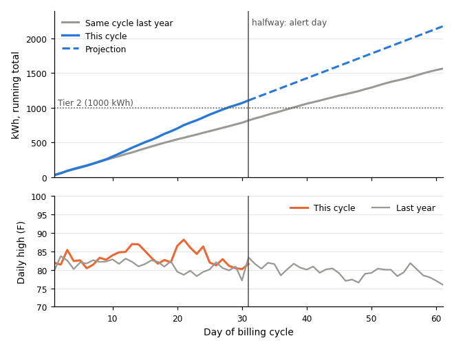
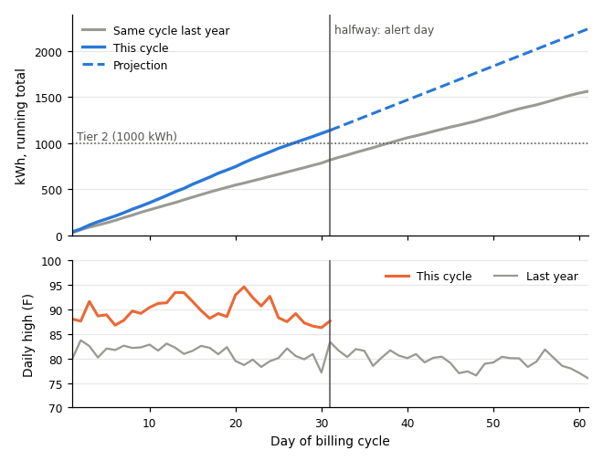
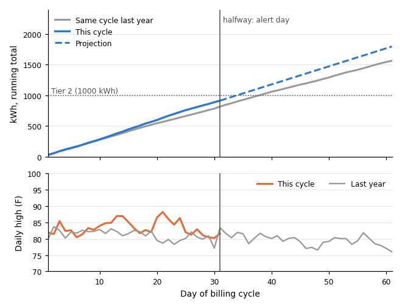

Simulated customers. The decision is made on day 31 of 61 (Aug 31). Top chart: running kWh total vs. the same cycle last year, with the projection dashed. Bottom chart: daily high temperature.
Customer A: bought an electric vehicle

| Usage vs. last year | +39% |
| Projected bill | $730 (last year $506) |
| Temperature vs. last year | +2.2°F |
| Change after weather adjustment | +22% |
| Result | Alert sent (cause: home) |
Your electricity use this billing period is running about 39% higher than the same period last year. At this pace your bill will be around $730, compared to $506 last year. You're on track to use over 1,000 kWh, and usage above that is billed at the higher Tier 2 rate.
Customer B: hotter summer

| Usage vs. last year | +43% |
| Projected bill | $755 (last year $506) |
| Temperature vs. last year | +8.5°F |
| Change after weather adjustment | +0% |
| Result | Alert sent (cause: weather) |
Your electricity use this billing period is running about 43% higher than the same period last year. At this pace your bill will be around $755, compared to $506 last year. You're on track to use over 1,000 kWh, and usage above that is billed at the higher Tier 2 rate.
Customer C: steady usage

| Usage vs. last year | +14.9% |
| Projected bill | $592 (last year $506) |
| Temperature vs. last year | +2.2°F |
| Change after weather adjustment | +1% |
| Result | No alert (under the 15% threshold) |